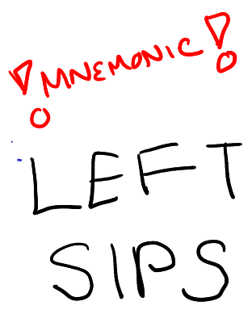
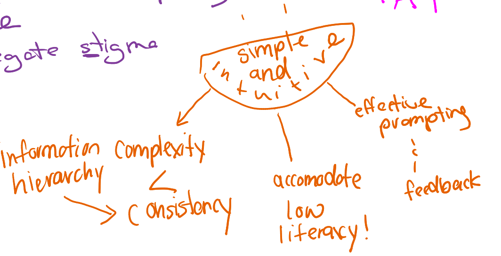
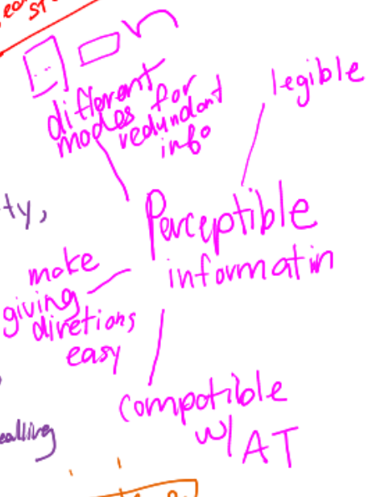
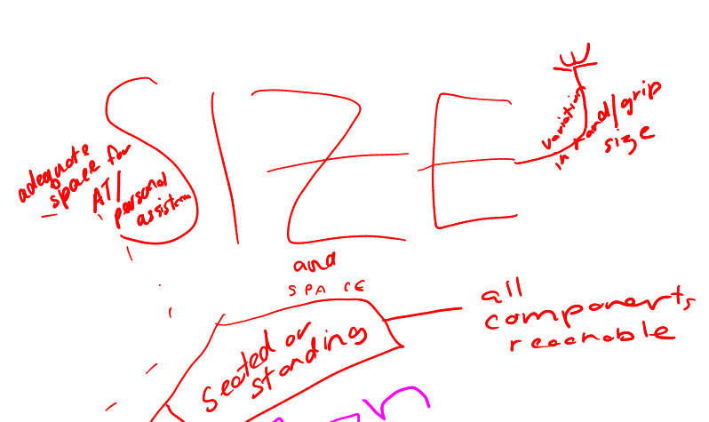
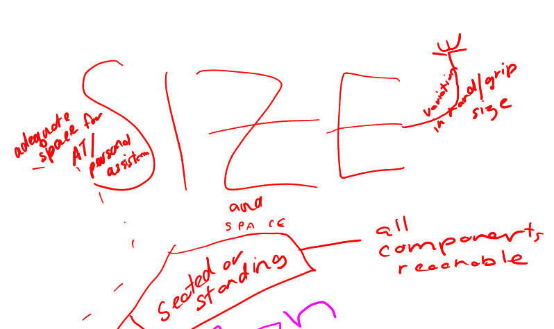

2E. Principles of UD
Today, I'm going to spend some time memorizing them and documenting my memorization strategy.
My Mind Map
I've made this ugly mind map. Going to spend some time memorizing it top to bottom. I want to memorize each guideline, roughly in order. There are some places where the literal map differs of the actual guidelines.

Map Transcription
This description covers the map by going down the entire left side of the document, scooping the bottom, and coming back up. I describe a lot on the actual visual details because they support my memory. I 'walk' this mindmap by basically describing everything that I describe here to myself just before I'm about to go to sleep.
In bold blue, the title 'Universal Design Principals'
!Mnemonic! LEFT SIPS
Low Physical Effort (in green)
Three nodes go from top right and move counterclockwise. The first node is accompanied by doodle of a person with block shoulders and reads 'neutral. The second node reads 'force: reasonable'. The third node is 'minimize' and has two subnodes: repetitive action, and sustained effort.
Flexibility (in brown)
This map is slightly stylized. Flexibility is written in cursive. At the top, we see 'Choice'! with a drawing of the ASL sign for 'choice' drawn from the first person view. On either side of 'Flexibility' are arrows pointing left and right, labelled 'LH' and 'RH' respectively. Two more nodes outstretch like legs: adapt to pace, and facilitate accuracy. The total effect is for the map to ressemble a person with very long eyelashes.
Tolerance for error (blue)
The title of the map features bold, 3D block lettering. Nodes start from the bottom right, and go up in an arc. First, the logograph for the toki pona word meaning 'to get rid of' points to some text saying 'hazardous elemens' Secondly, the logograph for the toki pona word meaning 'to add' points to some more text: Warnings, failsafes, most used elements. On the opposite side, some eyes peer above text saying 'discourage unconscious action if you need vigilance!'
Simple and intuitive (in citrus)
The title of this map is contained in a doodle of a grinning mouth with two dots for eyes. Nodes start at the bottom left and sweep right, as if the mouth is spitting out each one. The first node is 'Complexity < Consistancy,' the second is 'Accomodate low literacy!' and the third is 'Effective prompting and feedback.' An additional subnode, 'Information hierarchy' points at the word 'Consistancy.'
Equitable use (in purple)
There are three primary nodes on this arranged in a pyramid shape. The bottom left node are the words 'Same,' 'Segregate' and 'Stigma' the letter 'S' underlined on each. 'Same' has two additional subnodes forming a pyramid of their own, 'Identical' and 'Equivelant.' The top left node of this map is 'privacy, security, safety. The bottom right node is 'And, appealing!' with a large heart doodle.
Perceptible information (in pink!)
This mindmap has four nodes arranged in a half circle around the title, that is up against the border of the page. From top to bottom, the first node states 'legible.' The second node is 'different modes for redundant info' with the toki pona symbols for image, word, and tactile. The third node is 'make giving directions easy,' and the fourth is 'compatible with AT' (assistive technology).
Size and Space (in red)
Size is written in massize capitalized letters and and takes up a full 10th of the page. 'Space' is in tiny lettering underneath. Nodes start bottom left and go all around counter-clockwise. The first node reads 'seated or standing,' and it has two subnodes. The first a long line that zooms past the other maps and settles itself in a corner. It reads,' clear line of sight.' The second child of 'seated or standing' reads 'all components, reachable. The second node is stylized as a hand reaching out from 'SIZE' to give a little wave. It reads 'variation in grip size.' The final node says 'adequate space for AT/ personal assist' and is next to a big empty space that has a dashed border around it, as if it space designated for assistive technology and support.
Universal Design Principles and Guidelines as described from memory
Okay I think I'm ready. This is a lot to go through, so we're going to go and describe each of the nodes on these mind maps one by one. From memory.
But first, the mnemonic.
LEFT SIPS. Low physical effort, Equitable use, Flexibility in use, Tolerance for error, Simple and Intuitive design, Perceptible information, Size and shape.
Low Physical Effort
Principle Guidelines:
- The user can maintain a neutral body position while operating the product + (Little doodle of a person with posture like a solid square)
- Only a reasonable amount of force is required to use the .
- Design to minimize repeated actions
- Design to minimize sustained effort
This principle seeks to minimize fatigue experienced upon using the product.

Equitable Use
Principle Guidelines:
- Same experience. If not feasible provide equivalent experience..
- Don't stigmatize or segregate your users..
- Offer all users the same access to privacy, security, safety features.
- Design is appealing to all users + (Little heart doodle)
This principle aims to provide a product that people of diverse abilities can use.

Flexibility in Use
Principle Guidelines:
- Offer the user choices in how they want to use the product + (Little doodle of the ASL sign for 'decide')
- Usable by both right-handed and left-handed users.
- Support the user's accuracy in operation.
- Can't remember.
This principle aims to accomodate a/10: /10: /10: /10: /10: /10: /10: /10: variety of user preferences for usage..

Tolerance for Error
Principle Guidelines:
- Arrange the features to make accessible the most used features and to ensure hazards are out of the way.
- Provide warnings of errors and hazards.
- Provide fail-safes.
- In tasks that require vigilance, encourage the person to stay on task + (Little doodle of eyes peering out)
This principle that can adapt to failure, and reduces the chances of that happening.

Simple and Intuitive
Principle Guidelines:
- Avoid unneeded complexity.
- Strive for consistency in patterns and usage.
- Ensure that your product can be used by people in a spectrum of language and literacy abilities.
- Ensure the most important information is first/knowledge structure intuitively in structure
- Can't remember.
This principle ensures that people of various language and literacy abilities, as well as cognitive difficulties, can use the product.
Perceptible Information
Principle Guidelines:
- Provide the information in lots of different formats (tactile, visual, pictoral)
- Can't remember.
- Can't remember.
- Ensure assistive technology has compatability with your design..
This principle ensures that people of various sensory disabilites can still access the information.
Size and Shape
Principle Guidelines:
- Ensure that sightlines are good for both seated and standing occupants.
- Ensure functionality is available for people regardless of whether they are sitting or standing..
- Ensure the functionality can accomodate various grip styles and hand shapes.
- Ensure there is enough space to manoever/accomodate assistive technology and support..
This principle aims to people regardless of their size, mobility, and hand shape.
 

Source: The Body of Knowledge
The UDP date back to 1997 and were created by a multidisciplinary team at North Carolina State University. Universal design is good design, by which everyone benefits when everyone is considered in the design process.
[Universal design] is a fundamental condition of good design, [not a special requirement.]
Source: Centre for Excellence in Universal Design
The link given in the BoK is broken, so I'm just gonna look at a few pages on this website to get an idea.
Definition and Overview
Irish law (The Centre for excellence is located in Ireland) has a codified formal definition of universal design, which is the definition that we see everywhere based on the definition section for article two of the UNCRPD. The Centre also mentions Article 4 of the UNCRPD which mandates states to promote research and development of UD products and environments. Also fascinatinly, they provide another synonym for UD/inclusive design/design for all that I haven't seen before: transgenerational design.
The Centre targets different interventional tactics at the macro, meso and micro levels in an attempt to align with UN Sustainable Development Goals. This model recognizes that the bottom line implements. In other words, individuals are the ones that actual do the work of UD. The macro and meso levels are in service of this individual action through governance and policy making.
History of Universal Design
As a field, UD is an amalgamation of concepts from the following fields: participatory design, human-centered design, asistive technology, and disability-specific design. The Centre calls out 'assistive technology' as its own field. This feels like a call towards the 'functional solutions' model of disability.
In terms of names, dates, and places, the Centre attributes a large part of focus that was newly given to the needs of Disabled people as being a post-WWII veteran issue. I personally am interested in seeing a bottom-up history of accessibility, I should seek that out. I don't think the IAAP will give it to me.
Benefits and Drivers
In this section, we see all the familiar talking points. The Centre identifies that everyone across a continuum of ability can benefit from increased usability. They also identify that the population is getting older, and people with disabilities are themselves living longer.
Independent living is identified as a key priority that enables greater participation in society. The W3C, in their communications, often relay that technology is ultimately an enabler that helps people achieve things that would literally not have been possible otherwise. But the Centre takes a slightly different approach. Society at large is relying increasingly on technology; in places that did not require technology before, technology has become the new norm. In this way, some activities can actually become less accessible due to the introduction of technology. Anecdotally, we can see this very commonly in the elderly populations that struggle with adapting to new tech.
Market Crossover Success puts a name on phenomonen that we have seen mentioned briefly in other materials. It's where technology initially designed as assistive technology goes mainstream.
The Centre also names Increased Consumer Expectations and Acceptance at First Use as additional benefits. Especially on the internet, people nowadays take very little time to form a judgement on whether they like a product (less than 50 milliseconds in some cases), and in today's climate, they are more likely to voice their opinions. It's a fraught situation for product makers, the the increase in usability the UD approaches offer can be a North Star in navigating through shifting expectations and norms.
Source: University of Washington, UD Processes Principles and Applications
I like everything about this piece except for the introduction, but I understand why it's been written this way, considering the audience is mostly non-specific professionals who are interested in the principles behind UD and may not be familiar with disability culture. It also rattles off 'barrier-free design,' and 'inclusive design' as not being synonymous with universal design. And I don't think that's necessarily accurate. Many definitions of inclusive design are nearly legally synonymous with the ones for UD, so this introduction just seems like it names the other synonyms merely to dunk on them.
It gives the typical UNCRPD definition, but then gives a more descriptive, simplified, and retroactive definition: that which is accessible, usable and inclusive is considered to meet universal design.
In addition to naming the seven principles of UD, it also gives the principles of Universal Design for Learning, or UDL. We will cover this in depth later, but suffice for now that there are three principles: multiple means of engagemment, multiple means of representation, and multiple means of action/expression. They also give the four guiding principles of WCAG.
7 UD principles + 3 UDL principles + 4 WCAG principles gives us 14. With that background established the author finally gets to their argument: these three focuses are not often considered alongside one another. The author presents another schema that their team has developed: Univeral Design in Instruction, that they belive takes into account all 14 principles and synthesizes it into the medium of instruction and pedagogy. It is based on domains: it describes how physical access, delivery methods, information resources, interaction, feedback, assessment, and accomodation should be made to meet universal design principles. By directing the 14 principles at specific practice areas, it makes for easier implementation. The authors also show a small sample workflow for how to apply UD into other domains